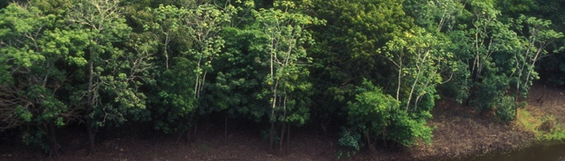

South America
From the wild desert coastlines of northern Colombia and Peru to the lush jungle beaches of Venezuela and Brazil, South America has some of the most beautiful stretches of sand of any coastlines on earth. If you're sun-worshipping beach-bum, then you will be in heaven while travelling through this continent.
Here's what to visit:
- Machu Picchu, Peru
- Rio de Janeiro, Brazil
- Galapagos Islands, Ecuador
- Buenos Aires, Argentina
- Amazon Rainforest
- Easter Island, Chile
Machu Picchu, Peru
The engineering genius and precision of the Incas is simply stunning, especially on this little bit of land in the clouds. The Incas mastered the technique called ashlar where blocks of stone are cut to fit together tightly without mortar. The stones are so tightly fit you can't even fit a blade between them. It is also a testament to the structural integrity of the site that it still stands, through earthquakes, constant torrential rain and, now, heavy tourism.
Rio de Janeiro, Brazil
The ocean-cradling, mountain-spiked city of Rio de Janeiro, Brazil is known for everything from resplendent samba to the beautiful game (soccer) to its brilliant and diverse Carioca spirit to being a global pop culture icon (The Girl from Ipanema, the 2016 Summer Olympics, et al). It's impossible to capture its complexity quickly, but, in an attempt: Rio is coruscating, complicated, extreme and tranquil as a humid morning, all gliding between its vaporous summits and shaded lagoons. It has to be said that there is some—though nowhere near total—truth to its reputation as being dangerous. Rio de Janeiro is postcard pretty, but for many it is far from paradisiacal. It presents vast and acute socioeconomic polarization, where expensive flats may be just steps from impoverished hillside communities. Pacification efforts to curtail crime in these communities (also called favelas, though this term has developed a derogatory connotation over time) have not entirely worked. Concerns are mounting over the far right ideology of Brazil's newly elected president, Jair Bolsonaro. And last year, a Rio de Janeiro councilwoman named Marielle Franco-who came from the Mare neighborhood, located near the international airport-was assassinated. Franco was an activist and a rising political star, fighting for women's and LGBTQ+ rights, as well as for those living below the poverty line. Just last week, at Rio's Sambadrome, where tens of thousands gather to watch the area's prestigious samba schools perform in a parade for Carnaval, a group called Mangueira was named champion. Within their display, they honored Franco; the school received tens across the board.
Galapagos Islands, Ecuador

We could just say if such luminaries as Richard Gere, Prince Charles (noted environmentalist) and Camilla, Leonardo DiCaprio (another noted environmentalist), Daryl Hannah, Bo Derek, the pirate William Dampier and Herbert Melville (author of Moby Dick) all visited the Galapagos Islands then they must be a pretty hip place to visit. And we'd be right of course but you'd be none the wiser as to why the Galapagos Islands are so famous and such an international draw.
Buenos Aires, Argentina
Buenos Aires is a dynamic place whose sophistication and fashionable locals echo Western capitals like Milan, and where reinvention is as valued as the past. Rollercoaster politics aside, Buenos Aires is proud of its literary heritage - heroes new and old like Silvina Ocampo, Jose Luis Borges and Samanta Schewblin - and it shows in its lively bookstores and historical landmarks. The city also it loves its steak - how can it not when you pair it with Malbec - which almost always guarantees a great meal.
Amazon Rainforest
The Amazon rainforest accounts for more than half of the world's remaining forests and 20 percent of the world's oxygen—which means it's massive and there's a lot to explore. The bright greens of the forests can only be described as “Amazon green,” meaning that you have to see it to truly understand the color. Take out a machete and explore the most massive stretch of forest in the world.
Easter Island, Chile

The island is best known for its 887 human-shaped figures, known as moai statues. They were, impressively, carved from rock and transported around the island. The moai are believed to have honored ancestors and they rest on stone shrines known as ahu. While not all remained in great condition, some have been restored and all have been protected after the island achieved UNESCO World Heritage status.